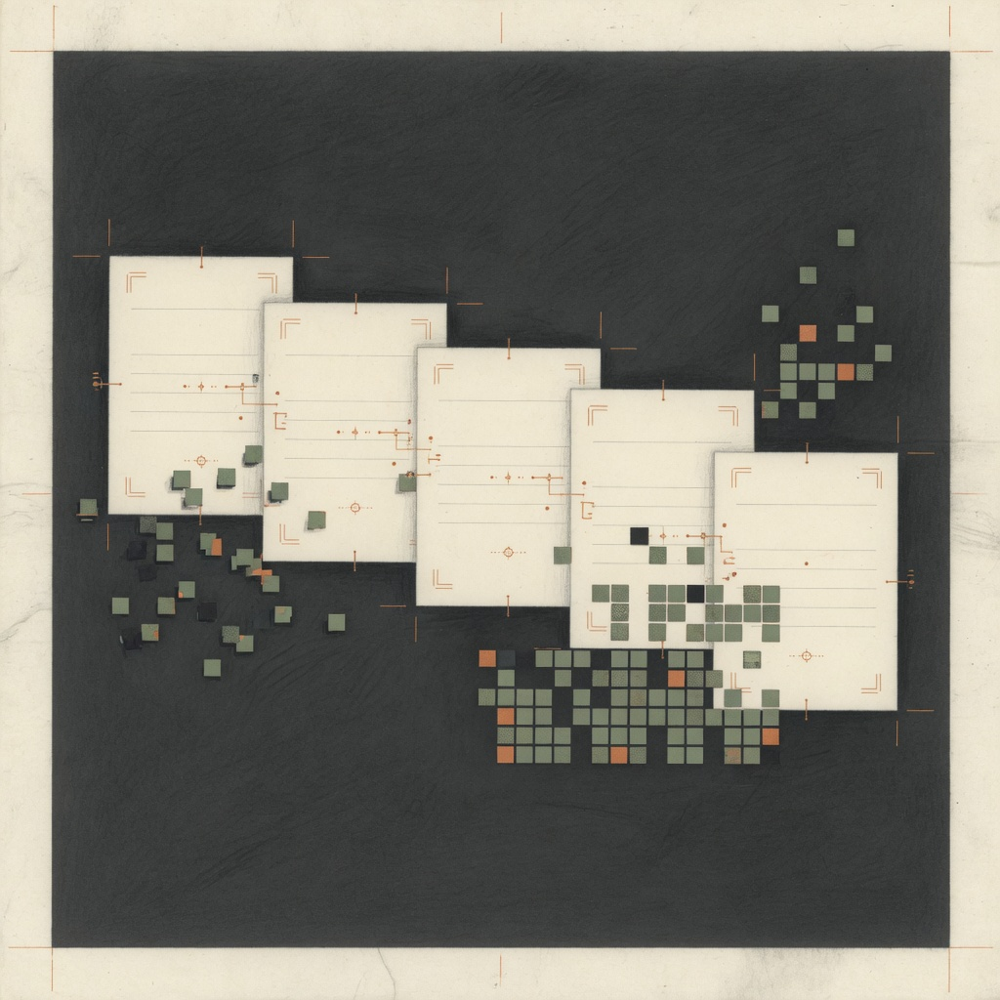

ZEITFREI WORKSHOP
模組包翻譯工具
選好遊戲資料夾就能翻。翻譯、字體、錯誤分析三個服務同一工房。
翻譯整合包
先選翻多深，再選資料夾；完成後直接套用到遊戲。
選一個就好，不是同意書。之後還可以用「再次複查」繼續加深。
你在 CurseForge、Modrinth、Prism Launcher 等啟動器實際遊玩的資料夾。
正在確認是否需要遊戲內補充。
ⓘ套用前請先關閉 Minecraft。是否建立備份由下方選項決定；分享檔只有完成翻譯後才會開放。
更多選項：結果位置、版本、AI、參考翻譯
正常會直接套用到整合包資料夾。想另外保留結果時，翻譯前勾選下方選項；備份也會放在結果資料夾。
會先自動偵測，也可以手動指定。
尚未選擇遊戲實例進階：模式、品質與其他
AI：正在確認可用方式
AI 為選用功能；已有中文的內容仍會先做台灣用語轉換。
使用開發者提供的 API 前，請先登入並加入 ZeitFrei 官方伺服器。
瀏覽器沒有自動開啟時，可複製這個登入網址。
Discord 資格確認後，再完成一次安全驗證。
參考翻譯（選用）
可選本機 CTE2／繁中包資料夾或 zip，也可使用 CFPA 等公開簡中資源包；工具只填缺並轉台灣用語，不會把參考包上傳到共享 R2。CFPA 多為 CC BY-NC-SA，請自行遵守原授權。
尚未找到參考翻譯。字體資源包
這是獨立服務：把你喜歡的字體一鍵放進 Minecraft。

選一個你有權使用的 .ttf 或 .otf（不支援 TTC 合集），工具會建立可放進 resourcepacks 的資源包。
支援 TTF、OTF（請勿使用 TTC）。
會建立在這個位置的 翻譯結果/resourcepacks。
預覽（近似，遊戲內可能略有差異）
繁體中文 Aa0123 物品名稱樣本
進階說明
字重感是 Minecraft 字體 renderer 的近似調整，不會改寫 TTF/OTF 的原始筆畫。如果要真正變粗或變細，請選用對應字重的字體檔，例如 Regular、Medium 或 Bold。
建立後會同時寫入 default.json 與 uniform.json，讓一般文字和 Unicode 文字都能使用。
ⓘ字體檔只會被複製進資源包，不會修改原始字體檔。
錯誤分析
把閃退報告或錯誤訊息貼上來，先找真正原因。

分析只在本機進行，不會因為看到「翻譯」就把所有問題算在翻譯上。
優先貼完整 crash report；也可以貼 latest.log、debug.log。只貼「退出碼 -1」通常無法找到原因。